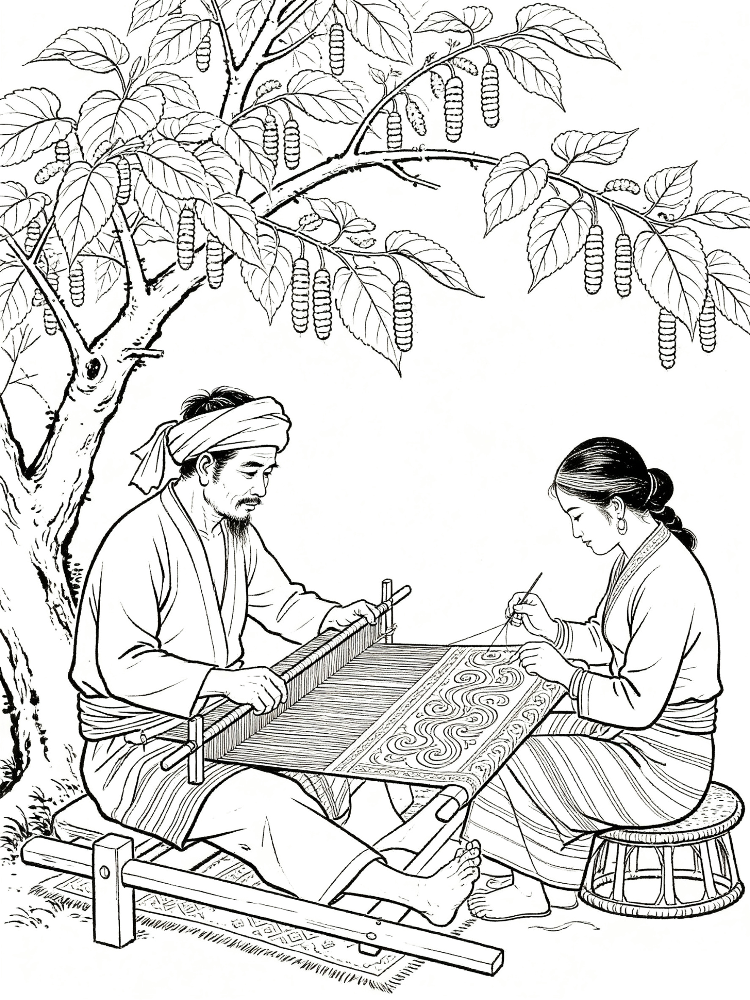
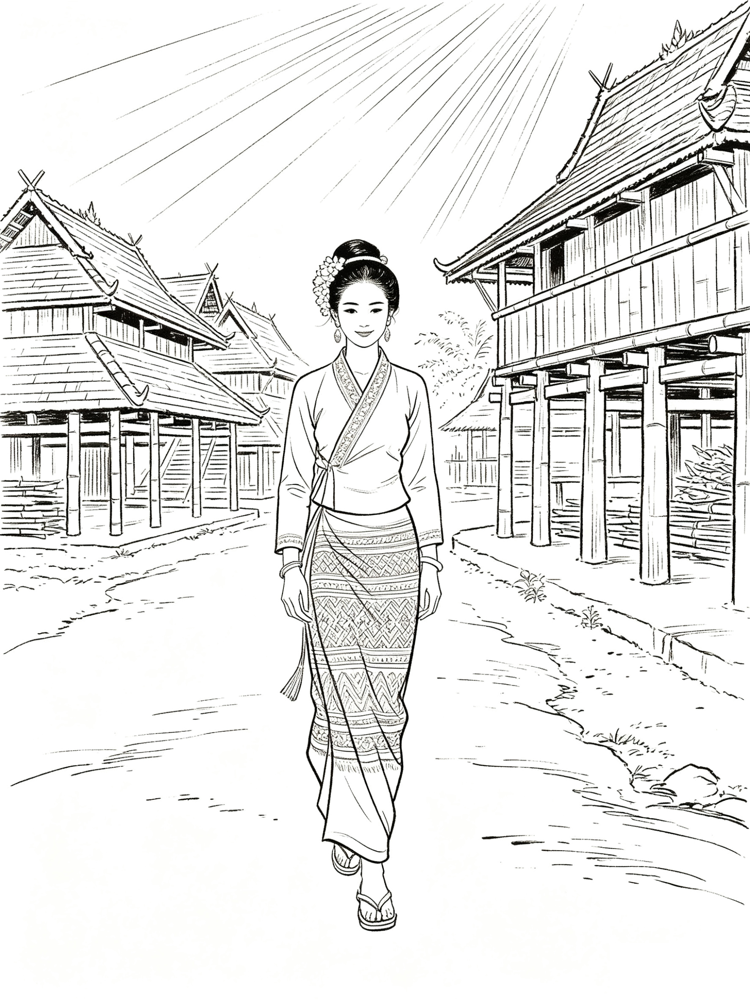
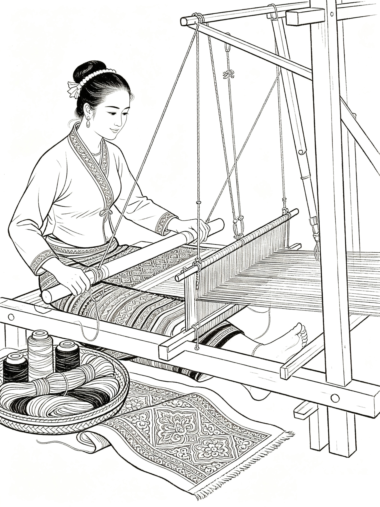
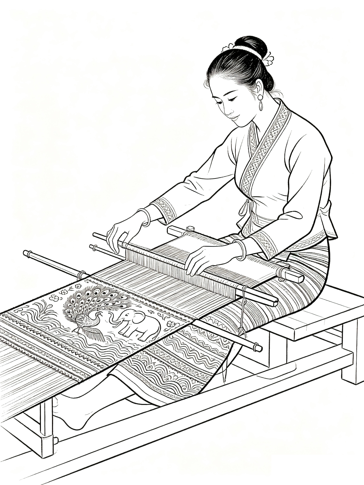
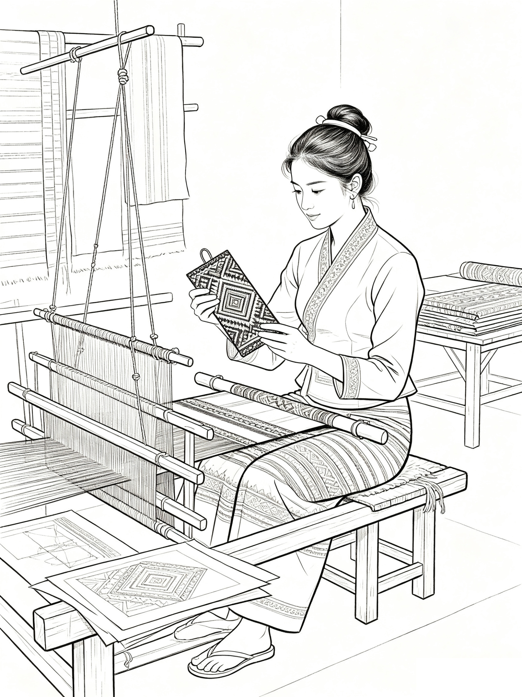
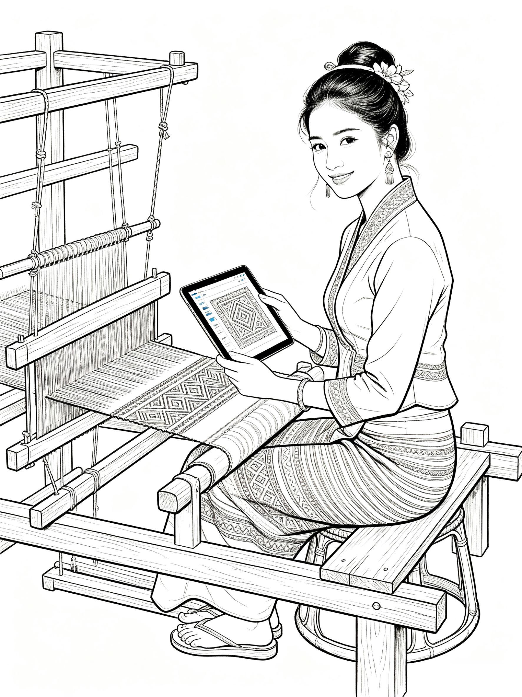

Explore the Art of Dai Brocade
探索非遗傣族织锦历史溯源

傣族先民已掌握种桑养蚕、纺织染色技艺，能织成彩色布帛并加以刺绣，据《后汉书》记载，哀牢人可织成文章如绫锦，是傣锦最早的历史记载。

傣锦技艺初具规模，以娑罗树子纺线织布，制成“五色娑罗笼”衣裙，成为男女通用服饰，织造技艺与材料应用日趋成熟。

傣锦缫丝织造技艺高度发展，丝织傣锦质地细软、色泽艳丽、纹样繁复，产量高且普及广泛，平民与贵族皆穿戴使用。

织造工艺趋于完善，蚕丝五色锦闻名天下，丝幔帐、兜罗锦、绒锦等成为贡品，技艺成熟且深受宫廷与贵族青睐。

傣锦纹样体系成熟，寓意系统完善，织造技艺在民间稳定传承，广泛应用于服饰、礼仪、宗教等场景，成为文化核心载体。

传统织造技艺在民间持续流传，虽受时代冲击，仍由民间艺人坚守传承，在婚俗、节庆中发挥重要文化作用。

国家重视民族手工艺保护，傣锦得到系统整理与传承，建立传承基地，培养新一代匠人，技艺得以延续发展。

傣族织锦入选国家级非物质文化遗产，传统工艺受到全面保护，开始与现代文创设计结合，逐步走向市场与国际。

坚守手工织造传统，纹样与色彩愈发精美，应用场景不断拓展，在服饰、文创、装饰等领域创新发展，实现活态传承。